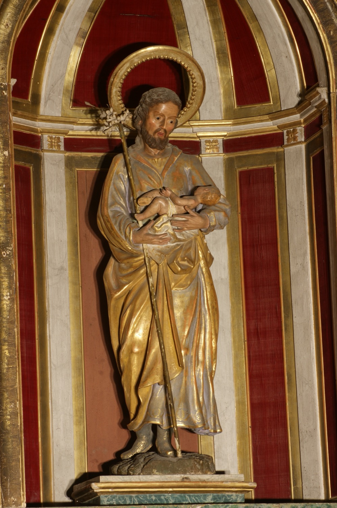

Sant Josep (s. I) va ser el marit de la Verge Maria. Era membre de la casa de David i fuster de professió. Segons els evangelis apòcrifs, era vidu i tenia fills d’un matrimoni anterior quan es casà amb Maria, que tenia només catorze anys. Encara no havien començat a conviure plegats quan ella quedà embarassada. Com que Josep era un home just, no la volgué denunciar i decidí repudiar-la en secret, però l’arcàngel sant Gabriel se li aparegué en somnis i li anuncià que el fill que esperava Maria era el Fill de Déu i havia estat concebut per obra de l’Esperit Sant. Arran d’aquest somni es posà al servei del pla diví i tengué cura de tots dos. La darrera referència que en fan els Evangelis és quan cercà el Nin Jesús al temple, per la qual cosa es creu que morí abans de l’inici de la vida pública de Jesucrist.
En aquesta escultura del s. XVIII apareix amb el Nin Jesús en braços i amb un dels seus atributs més característics: una vara florida que recorda com va ser escollit com a marit de la Verge. Quan els sacerdots del temple volgueren cercar un pretendent per a Maria (que hi servia des dels tres anys), demanaren a tots els homes de la casa de David en edat de casar-se que deixassin les seves vares damunt l’altar del temple, i la de Josep florí miraculosament, senyal que era l’escollit per Déu.